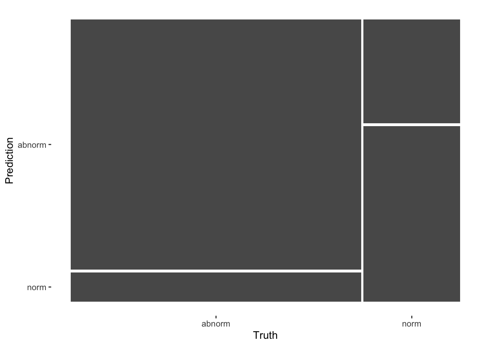
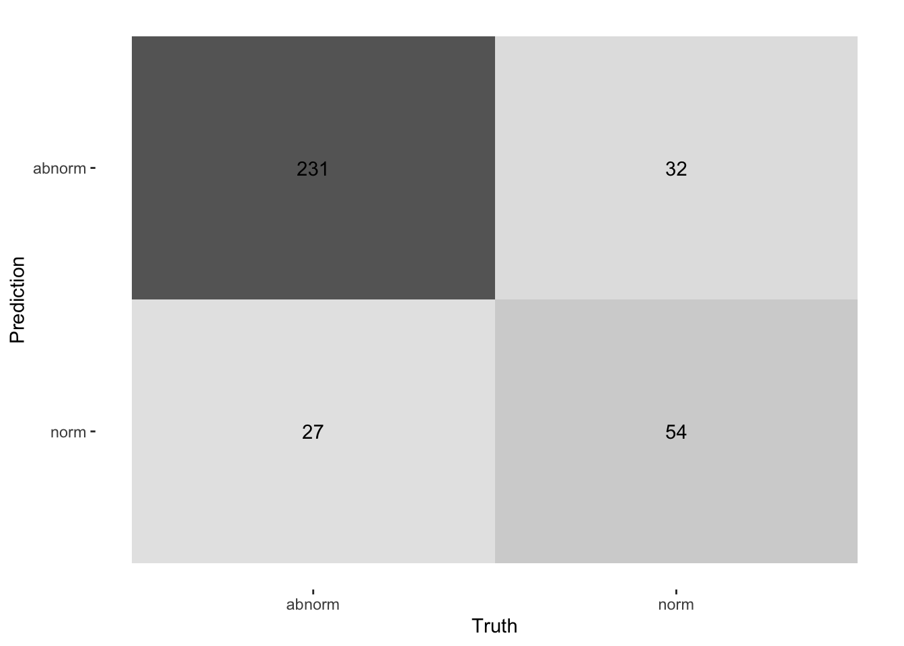
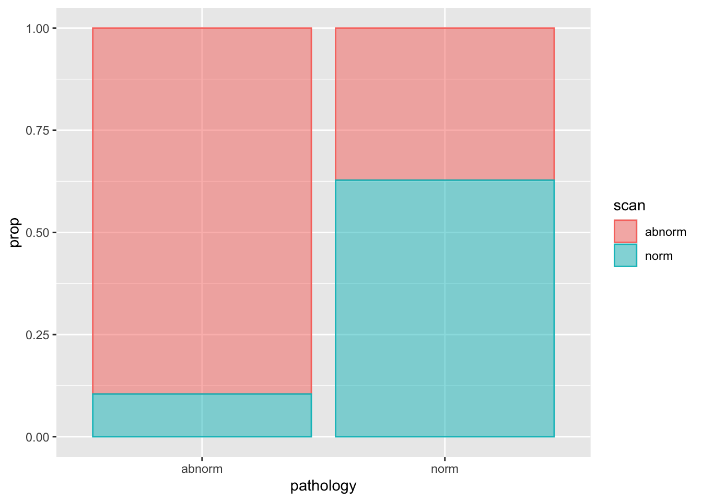

library(yardstick)
#>
#> Attaching package: 'yardstick'
#> The following object is masked from 'package:readr':
#>
#> specDTA (Yardstick)
data("pathology")
glimpse(pathology)
#> Rows: 344
#> Columns: 2
#> $ pathology <fct> abnorm, abnorm, abnorm, abnorm, abnorm, abnorm, abnorm, abno…
#> $ scan <fct> abnorm, abnorm, abnorm, abnorm, abnorm, abnorm, abnorm, abno…Confusion Matric
cm <- conf_mat(pathology, truth = pathology, estimate = scan)
cm
#> Truth
#> Prediction abnorm norm
#> abnorm 231 32
#> norm 27 54summary(cm)
#> # A tibble: 13 × 3
#> .metric .estimator .estimate
#> <chr> <chr> <dbl>
#> 1 accuracy binary 0.828
#> 2 kap binary 0.534
#> 3 sens binary 0.895
#> 4 spec binary 0.628
#> 5 ppv binary 0.878
#> 6 npv binary 0.667
#> 7 mcc binary 0.534
#> 8 j_index binary 0.523
#> 9 bal_accuracy binary 0.762
#> 10 detection_prevalence binary 0.765
#> 11 precision binary 0.878
#> 12 recall binary 0.895
#> 13 f_meas binary 0.887Plot Bar Chart
autoplot(cm, type = "mosaic")
autoplot(cm, type = "heatmap")
pathology_cell <- pathology |>
count(pathology, scan) |>
mutate(prop = n/sum(n))
pathology_cell
#> pathology scan n prop
#> 1 abnorm abnorm 231 0.67151163
#> 2 abnorm norm 27 0.07848837
#> 3 norm abnorm 32 0.09302326
#> 4 norm norm 54 0.15697674pathology_cell |>
ggplot(aes(pathology, prop, fill = scan, color = scan)) +
geom_col(alpha = 0.5, position = "fill")
Metric: Default
pathology |> metrics(truth = pathology, estimate = scan)
#> # A tibble: 2 × 3
#> .metric .estimator .estimate
#> <chr> <chr> <dbl>
#> 1 accuracy binary 0.828
#> 2 kap binary 0.534Metric Set
class_metrics_1 <- metric_set(accuracy, sens, spec, ppv, npv)pathology |> class_metrics_1(truth = pathology, estimate = scan)
#> # A tibble: 5 × 3
#> .metric .estimator .estimate
#> <chr> <chr> <dbl>
#> 1 accuracy binary 0.828
#> 2 sens binary 0.895
#> 3 spec binary 0.628
#> 4 ppv binary 0.878
#> 5 npv binary 0.667Custom Class Metric
Custom LR+ & LR-
From: How to implemen custom metric set
Formular
The positive likelihood ratio is calculated as:
\[ {\displaystyle {\text{LR}}+={\frac {\text{sensitivity}}{1-{\text{specificity}}}}} \]
\[ {\displaystyle {\text{LR}}+={\frac {\text{TP / (TP + FN)}}{\text{FP / (FP + TN)}}}} \]
The negative likelihood ratio is calculated as:
\[ {\displaystyle {\text{LR}}-={\frac {1-{\text{sensitivity}}}{\text{specificity}}}} \]
\[ {\displaystyle {\text{LR}}-={\frac {\text{FN / (TP + FN)}}{\text{TN / (FP + TN)}}}} \]
Example
pathology_xtab <- table(pathology$scan, pathology$pathology)
pathology_xtab
#>
#> abnorm norm
#> abnorm 231 32
#> norm 27 54Helpers
# Logic for `event_level`
event_col <- function(xtab, event_level) {
if (identical(event_level, "first")) {
colnames(xtab)[[1]]
} else {
colnames(xtab)[[2]]
}
}finalize_estimator_internal.lr_pos <- function(metric_dispatcher, x, estimator, call) {
validate_estimator(estimator, estimator_override = "binary")
if (!is.null(estimator)) {
return(estimator)
}
lvls <- levels(x)
if (length(lvls) > 2) {
stop("A multiclass `truth` input was provided, but only `binary` is supported.")
}
"binary"
}Implement
LR Pos
lr_pos_impl <- function(truth, estimate, estimator, event_level) {
xtab <- table(estimate, truth)
# Rather than implement the actual method here, we rely on
# an *_estimator_impl() function that can handle binary
# and multiclass cases
lr_pos_estimator_impl(xtab, estimator, event_level)
}# This function switches between binary and multiclass implementations
lr_pos_estimator_impl <- function(data, estimator, event_level) {
if(estimator == "binary") {
lr_pos_binary(data, event_level)
} else {
# Encapsulates the macro, macro weighted, and micro cases
# TODO
}
}LR Neg
lr_neg_impl <- function(truth, estimate, estimator, event_level) {
xtab <- table(estimate, truth)
# Rather than implement the actual method here, we rely on
# an *_estimator_impl() function that can handle binary
# and multiclass cases
lr_neg_estimator_impl(xtab, estimator, event_level)
}# This function switches between binary and multiclass implementations
lr_neg_estimator_impl <- function(data, estimator, event_level) {
if(estimator == "binary") {
lr_neg_binary(data, event_level)
} else {
# Encapsulates the macro, macro weighted, and micro cases
# TODO
}
}Binary Implementation
LR Pos
lr_pos_binary <- function(data, event_level) {
col <- event_col(data, event_level)
col2 <- setdiff(colnames(data), col)
tp <- data[col, col]
tn <- data[col2, col2]
fp <- data[col, col2]
fn <- data[col2, col]
# list(tp = tp, tn = tn, fp = fp, fn = fn)
(tp / (tp + fn)) / (fp / (fp + tn))
}
lr_pos_binary(pathology_xtab, event_level = "first")
#> [1] 2.40625LR Neg
lr_neg_binary <- function(data, event_level) {
col <- event_col(data, event_level)
col2 <- setdiff(colnames(data), col)
tp <- data[col, col]
tn <- data[col2, col2]
fp <- data[col, col2]
fn <- data[col2, col]
# list(tp = tp, tn = tn, fp = fp, fn = fn)
(fn / (tp + fn)) / (tn / (fp + tn))
}
lr_neg_binary(pathology_xtab, event_level = "first")
#> [1] 0.1666667# Checking
pathology_xtab
#>
#> abnorm norm
#> abnorm 231 32
#> norm 27 54
colnames(pathology_xtab)
#> [1] "abnorm" "norm"
# TP
pathology_xtab["abnorm", "abnorm"]
#> [1] 231
# TN
pathology_xtab["norm", "norm"]
#> [1] 54
# FP
pathology_xtab["abnorm", "norm"]
#> [1] 32
# FN
pathology_xtab["norm", "abnorm"]
#> [1] 27Multiclass Implementation
[TODO]
Vec implement
LR Pos
lr_pos_vec <- function(truth,
estimate,
estimator = NULL,
na_rm = TRUE,
case_weights = NULL,
event_level = "first",
...) {
# calls finalize_estimator_internal() internally
estimator <- finalize_estimator(truth, estimator, metric_class = "lr_pos")
check_class_metric(truth, estimate, case_weights, estimator)
if (na_rm) {
result <- yardstick_remove_missing(truth, estimate, case_weights)
truth <- result$truth
estimate <- result$estimate
case_weights <- result$case_weights
} else if (yardstick_any_missing(truth, estimate, case_weights)) {
return(NA_real_)
}
lr_pos_impl(truth, estimate, estimator, event_level)
}
lr_pos_vec(pathology$pathology, pathology$scan)
#> [1] 2.40625LR Neg
lr_neg_vec <- function(truth,
estimate,
estimator = NULL,
na_rm = TRUE,
case_weights = NULL,
event_level = "first",
...) {
# calls finalize_estimator_internal() internally
estimator <- finalize_estimator(truth, estimator, metric_class = "lr_neg")
check_class_metric(truth, estimate, case_weights, estimator)
if (na_rm) {
result <- yardstick_remove_missing(truth, estimate, case_weights)
truth <- result$truth
estimate <- result$estimate
case_weights <- result$case_weights
} else if (yardstick_any_missing(truth, estimate, case_weights)) {
return(NA_real_)
}
lr_neg_impl(truth, estimate, estimator, event_level)
}
lr_neg_vec(pathology$pathology, pathology$scan)
#> [1] 0.1666667DF implement
# LR Pos
lr_pos <- function(data, ...) {
UseMethod("lr_pos")
}
lr_pos <- new_class_metric(lr_pos, direction = "maximize")
# LR Neg
lr_neg <- function(data, ...) {
UseMethod("lr_neg")
}
lr_neg <- new_class_metric(lr_neg, direction = "minimize")lr_pos.data.frame <- function(data,
truth,
estimate,
estimator = NULL,
na_rm = TRUE,
case_weights = NULL,
event_level = "first",
...) {
class_metric_summarizer(
name = "lr_pos",
fn = lr_pos_vec,
data = data,
truth = !!rlang::enquo(truth),
estimate = !!rlang::enquo(estimate),
estimator = estimator,
na_rm = na_rm,
case_weights = !!rlang::enquo(case_weights),
event_level = event_level
)
}lr_neg.data.frame <- function(data,
truth,
estimate,
estimator = NULL,
na_rm = TRUE,
case_weights = NULL,
event_level = "first",
...) {
class_metric_summarizer(
name = "lr_neg",
fn = lr_neg_vec,
data = data,
truth = !!rlang::enquo(truth),
estimate = !!rlang::enquo(estimate),
estimator = estimator,
na_rm = na_rm,
case_weights = !!rlang::enquo(case_weights),
event_level = event_level
)
}Using lr_pos()
lr_pos(pathology, truth = pathology, estimate = scan)
#> # A tibble: 1 × 3
#> .metric .estimator .estimate
#> <chr> <chr> <dbl>
#> 1 lr_pos binary 2.41lr_pos_vec(truth = pathology$pathology, estimate = pathology$scan)
#> [1] 2.40625Using lr_neg()
lr_neg(pathology, truth = pathology, estimate = scan)
#> # A tibble: 1 × 3
#> .metric .estimator .estimate
#> <chr> <chr> <dbl>
#> 1 lr_neg binary 0.167lr_neg_vec(truth = pathology$pathology, estimate = pathology$scan)
#> [1] 0.1666667Using with metric_set()
class_metrics_2 <- metric_set(accuracy, sens, spec, lr_pos, lr_neg)
class_metrics_2
#> # A tibble: 5 × 3
#> metric class direction
#> <chr> <chr> <chr>
#> 1 accuracy class_metric maximize
#> 2 sens class_metric maximize
#> 3 spec class_metric maximize
#> 4 lr_pos class_metric maximize
#> 5 lr_neg class_metric minimizeconf_mat(pathology, truth = pathology, estimate = scan)
#> Truth
#> Prediction abnorm norm
#> abnorm 231 32
#> norm 27 54class_metrics_2(pathology, truth = pathology, estimate = scan)
#> # A tibble: 5 × 3
#> .metric .estimator .estimate
#> <chr> <chr> <dbl>
#> 1 accuracy binary 0.828
#> 2 sens binary 0.895
#> 3 spec binary 0.628
#> 4 lr_pos binary 2.41
#> 5 lr_neg binary 0.167Check LR+
0.8953488 / (1 - 0.6279070) # LR+ = Sens / (1-Spec)
#> [1] 2.40625Check LR-
(1 - 0.8953488) / 0.6279070 # LR- = (1-Sens) / Spec
#> [1] 0.1666667